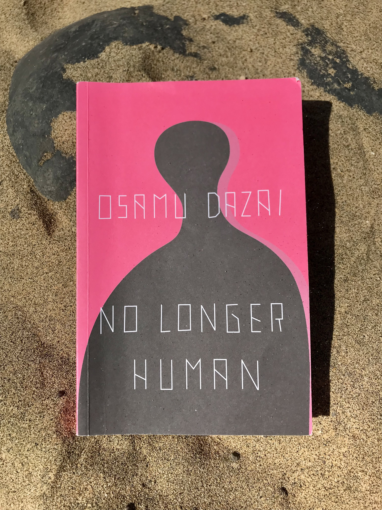

Tiziano Terzani - A Fortune-Teller told me: earthbound travels in the Far East
“Beware! You run a grave risk of dying in 1993. You mustn’t fly that year. Don’t fly, not even once.”
In 1976, a Hongkonger fortune teller said these words to the journalist Tiziano Terzani. Throughout the years, Terzani keeps this presage in mind and, driven by his love for new adventures rather than fear, he decides to abide by the prophecy. He communicates his intentions to the German newspaper he was working for at the time: “Der Spiegel”. The newspaper surprisingly agrees and allows Terzani to work as a land reporter in Indo-China. This is an intense year in which Terzani travels extensively: from the modern city of Singapore to the sleepy country of Laos; from smiling Thailand to hectic China; from mystical Myanmar to wounded Cambodia. Terzani starts to become fascinated with the art of oneiromancy, and this fascination grows stronger as the year unfolds. He visits a different fortune teller in each city he stops by, curious about learning new ominous techniques and listening to other premonitions. The book dives deep into Terzani’s thoughts as he travels from country to country. He focuses his attention more on the ordinary people he meets rather than historical events, more on the mystical nuances rather than the objective facts typically covered by a journalist. He tells the story of the ordinary people in Asia, the daily routine of the friends he meets and the blooming landscapes he sees on his way. Terzani has been in love with south-east Asia for most of his life, and this sacred curse gave him a chance to fully appreciate these lands.
Tiziano Terzani was a great writer, journalist, philosopher and expert on Indo-China. This book is a narrative report that you will read in one breath. I travelled pretty extensively in South-East Asia. Reliving my memories meanwhile reading Terzani’s book gave me goosebumps. Reading this book was like daydreaming: comparing his descriptions with photos in my mind, recalling the smells he described and the human touch of the local populations. I am very glad to have stolen this book from my dad’s library at the beginning of the pandemic. My mind was able to travel from the couch of my living room, and it was an unforgettable journey.
Tiziano Terzani - Un indovino mi disse
“Attento! Nel 1993 corri un gran rischio di morire. In quell’anno non volare. Non volare mai.”
Un indovino cinese di Hong Kong predisse a Terzani questa maledizione nell’anno 1976. Nonostante il passare del tempo, Terzani non dimentica la profezia e, in parte per gioco e in parte per curiosità, decide di accettare la sfida e di trascorrere l’anno spostandosi esclusivamente via terra e mare. Il giornale tedesco per cui lavorava nell’anno 1993, “Der Spiegel”, gli concede il permesso inusuale di coprire la zona del sud-est asiatico come giornalista di terra. Terzani inizia così l’anno partendo dal Laos, dove si trovava per motivi di lavoro. È un anno intenso in cui il giornalista si sposta molto nelle diverse realtà dell’Indocina: dalla modernissima città di Singapore, all’addormentato stato del Laos; dalla sorridente Tailandia, alla frenetica Cina; dalla mistica Birmania, alla ferita Cambogia. Questo libro racconta le riflessioni di Terzani che si muove lentamente di stato in stato. Nei suoi racconti si concentra più sulle persone che incontra che sugli avvenimenti storici, soffermandosi spesso sulle sfumature mistiche e tralasciando i fatti oggettivi tipici della professione di giornalista. Terzani, infatti, rimasto affascinato dalla profezia, si appassiona all’arte dell’oniromanzia e visita in ogni città almeno un indovino, incuriosito dalle tecniche premonitori e dai loro risultati discordanti. Racconta l’Asia della gente comune, la vita quotidiana delle persone che incontra e la rigogliosità dei paesaggi che attraversa. Terzani era innamorato del sud-est asiatico, e questa benedetta maledizione datagli dall’indovino di Hong Kong gli permette di vivere questa terra nel suo intimo più profondo.
Tiziano Terzani è stato un grandissimo scrittore e giornalista italiano, filosofo di vita e un profondo conoscitore dell’Indocina. Il libro è un reportage narrativo che si leggere d’un fiato. Io ho viaggiato parecchio nel sud-est asiatico: leggere questo libro è stato come sognare ad occhi aperti, rivivere le sue descrizioni con immagini scattate nella mia mente, ricordare gli odori e il contatto con la gente. Unire al suo racconto esperienze personali mi ha dato i brividi. Ho rubato il libro a mio papà nei primi mesi della pandemia, ormai più di un anno fa. La mia mente ha viaggiato dal divano del salotto, ed è stato un viaggio bellissimo!

Fyodor Dostoevsky - Notes from Underground
“I am a sick man.... I am a spiteful man. I am an unattractive man. I believe my liver is diseased. However, I know nothing at all about my disease, and do not know for certain what ails me.”
The unnamed narrator begins his monologue with this sentence that immediately conveys the feelings of negativity, contradiction and ineptitude of his existence. Dostoevsky explores the intimate thoughts of the Underground Man, who is tormented by the Russian philosophy of the time and the ideals of a utopian society without pain and suffering. In the first part of the book, the Underground Man starts a decadent and, sometimes, self-mocking monologue on his personal philosophical views. He chastises himself by recognising that he is an intelligent human being anguished by the problem of ineptitude. He shows himself as naked to the eyes of the reader, authentic in his worst flaws and almost proud of them. In the second part of the book, the Underground Man decides to abandon, figuratively, the underground where he lived for more than twenty years and goes back to when he was still living his life in the “outside world” working as a civil servant in St. Petersburg. He narrates some episodes of his life memoirs where he got upset and made a mockery of himself looking for vendetta. His efforts to find a place in society had all failed, and he tells with no shame all the times he vented his anger against weaker and more isolated people than him.
Dostoevsky wrote this novella in 1864 and became famous for its self-examination perspective and the character of the antihero. Personally, I despised the Underground Man: he evoked sympathy and irritability at the same time for his way of approaching his life and ineptitude towards the problems. This reading is different from what I usually read: it does not have a strong plot, and I didn’t develop any attachment towards the main character. Nonetheless, this book is a milestone in the history of literature that must be read once in a lifetime.
Fëdor Dostoevskij - Memorie dal sottosuolo
“Io sono un uomo malato.. astioso. Sono un uomo malvagio. Credo di essere malato di fegato. Del resto non ne so un accidente delle mia malattia e non so neppure esattamente cosa mi faccia male”.
Il protagonista innominato inizia il racconto con questa frase e subito lascia trapelare il senso misto di negatività, contraddizione e inettitudine che caratterizza la sua esistenza. In memorie dal sottosuolo, Dostoevskij esplora i cavilli intimi della mente del protagonista, tormentata da una Russia ottimista e in contrasto con gli ideali del positivismo di quel tempo. Nella prima parte del libro, in un monologo molto decadente che in alcuni tratti ha un carattere lievemente ironico, l’uomo del sottosuolo si autoflagella considerandosi un essere intelligente grazie alla sua introspezione, ma tormentato per la sua tendenza alla procrastinazione e inettitudine. Si espone come nudo davanti al lettore, sincero dei suoi difetti più sporchi e, talvolta, quasi orgoglioso di essi. Nella seconda parte del libro, filosofeggiando dalle tenebre del sottosuolo in cui ha vissuto per quasi un ventennio, il protagonista decide di uscire, figurativamente, e di raccontare le sue memorie di vita di vent’anni prima, quando lavorava come impiegato in un ufficio della burocrazia a San Pietroburgo. Racconta vicende in cui si è offeso e, per infantile vendetta, si è ridicolizzato. I suoi numerosi tentativi di integrarsi nella società hanno sempre fallito miseramente e lui narra senza filtri le sue rivendicazioni meschine e crudeli nei confronti di persone ancora piè disagiate e isolate dalla società di lui.
Dostoevskij scrisse questo libro nel 1864 e presto divenne famosissimo per l’introspezione personale e l’introduzione della figura dell’antieroe. L’uomo del sottosuolo mi è risultato odioso: suscita un misto tra compassione e nervosismo per la sua attitudine alla vita e il tono rassegnato del suo monologo, che a tratti sembra una confessione. È una lettura diversa rispetto alle ultime che ho fatto, priva di una forte storia narrante e che non permette affatto di affezionarsi al protagonista. È un tassello fondamentale della storia della letterature che consiglio a tutti di leggere almeno una volta nella vita.

George Orwell - Animal Farm
“All animals are equal. But some animals are more equal than others”. Animal Farm is a genius satire that never grows old: the oppression that motivates to look for freedom and equality turns then into a corrupted power that manipulates and exploits the weak ones.
There is widespread discontent among the animals in the farms of England: they know they are forced into draining work for the profits of men, the enemies. The hens cannot see the chicks from the eggs they lay; the cows have to constantly produce gallons of milk not for their own calves but for the enemies; the horses feel constant pain in their shoes for the hard work; the mares are immediately separated from their foals. One day, the animals of Manor Farm wake up and rebel against their own farmer, Mr Jones, and his employees. After the battle, they finally are free and decide to live and continue working at the farm for their own sake. But they don’t want to forget that they have learnt the lesson: never trust the men, who serve the interests of no other creatures but themselves. They rename the farm Animal Farm, institute seven commandments that summarize the principles of Animalism and proclaim equality among all animals. By being the most intelligent animals, the pigs are naturally and unanimously given the reins of the farm to assure its survival. Very soon, the same situation of tyranny and abuse of power starts slowly to grow in Animal Farm. In the end, it is no longer possible to tell pigs and men apart.
Animal Farm is a nice short story that is very easy to read but, at the same time, full of meaning. George Orwell, pseudonym of Eric Arthur Blair, wrote this book in 1945 as a satirical allegorical novel to criticize the Russian Revolution of 1917 and Stalin. I particularly enjoyed the style and the way Orwell played with the words: on the one hand, he used a very straightforward style; on the other hand, he showed how easy words can be used to deceive and confuse. My historical knowledge of the Russian revolution is limited but I could still enjoy this book and I think its insights can be applied to any situation of abuse of power.
George Orwell - La fattoria degli animali
"Tutti gli animali sono uguali, ma alcuni sono più uguali degli altri". La Fattoria degli Animali è una satira geniale il cui messaggio non tramonta mai: il sopruso che prima abilita e spinge alla ricerca della libertà e uguaglianza, poi dà potere che accieca e corrompe portando sempre alla sopraffazione dei deboli.
Tra gli animali delle fattorie dell’Inghilterra regna un malcontento generale: sono perfettamente consapevoli di venire sfruttati con estenuanti ore di lavoro esclusivamente per il profitto degli uomini, i nemici. Le galline pongono uova ogni giorno ma non vedono mai i loro pulcini; le mucche producono galloni di latte che vengono portati via dai loro vitelli; i cavalli hanno un constante mal di zampe per il duro lavoro; le giumente sono separate dai loro puledri pochi giorni dopo la nascita. Un giorno, gli animali di una fattoria nei pressi di Willingdon si svegliano dalla loro latenza e si rivoltano contro il loro signore, Mr Jones, e i suoi impiegati. Dopo la battaglia, gli animali si radunano e realizzano di essere diventati liberi e padroni delle loro vite. Decidono quindi di rimanere a vivere nella fattoria e di continuare i lavori di allevamento e agricoltura per se stessi. Ma non vogliono dimenticare la lezione di vita che hanno dovuto patire sulla loro pelle: non ci si potrà mai più fidare dei nemici uomini perché hanno dimostrato di essere unicamente motivati dal perseguimento di interessi personali a discapito degli altri. Una volta in controllo, gli animali rinominano la fattoria “Fattoria degli Animali”, scrivono sette comandamenti fondamentali riassumendo i principi dell’animalismo e proclamano l’uguaglianza assoluta tra gli animali. I maiali sono gli animali più intelligenti e svegli: il comando della fattoria viene quindi affidato unanimemente e naturalmente a loro per garantirne la sopravvivenza. Presto però si ripropone la medesima situazione di tirannia e l’abuso di potere si insedia lentamente nella Fattoria degli Animali. Alla fine, non sarà più possibile distinguere i maiali dagli uomini.
La Fattoria degli Animali è una piacevole lettura breve ma piena di significati. George Orwell, pseudonimo dello scrittore Eric Arthur Blair, scrisse questo libro nel 1945 come satira allegorica contro la rivoluzione russa del 1917 e Stalin. L’utilizzo del linguaggio e delle parole usato da Orwell è molto accattivante: da un lato è semplice e diretto, dall’altro mostra come si può giocare con le parole per ingannare e mandare messaggi nascosti. Pur non conoscendo molto bene i dettagli storici della rivoluzione russa, penso che questo libro sia intramontabile e che le sue conclusioni si possano applicare a qualunque situazione di abuso di potere.

Osamu Dazai - No longer human
Osamu Dazai wrote the book “No Longer Human” the same year he committed suicide.
Oba Yozo, the book’s main character, narrates the unfolding of his life with a cold detachment from the tragedies and deep unspoken problems that have surrounded and drowned his existence. Convinced of conducting a life of much shame since he was a boy, Yozo hides his true feelings and thoughts behind subterfuges. He always appears as the funniest person in the room thanks to his clowning skills, which allow him to wear a bright mask above a dark spirit. Unable to take hold of his life, he survives as a parasite on the shoulders of benefactors. His two natural talents of painting ghosts and seducing women bring him no comfort: he tries to commit suicide several times without success.
I started reading this book lying on a beach. I had to stop and change location because the contrast between the sunny weather and fresh sea breeze with the dark story was too stark and puzzling. This semi-autobiography scared me with its emotionless and direct way of recounting deep dark feelings. Throughout the book, I found myself in strong disagreement with Yozo, questioning his social aversion and inept choices. I was probably too superficial to fully understand his state of depression. Dazai’s masterpiece is surprisingly effortless to read considering the complexity of the topic.
Osamu Dazai - Lo squalificato
Osamu Dazai scrisse questo libro pochi mesi prima di suicidarsi.
Il protagonista Oba Yozo racconta in prima persona la sua vita con estrema freddezza e distacco dalle tragedie e i problemi latenti che circondarono la sua esistenza fino ad annegarla. Convinto fin da bambino di condurre una vita di vergogna e non degna di un umano, Yozo nasconde i suoi veri sentimenti al mondo intero. Imbroglia tutti comportandosi da giullare: sviluppa negli anni tecniche perfette per suscitare risate, ma in realtà non fa altro che indossare una maschera per celare il suo spirito ombroso. Sopravvive spostandosi di casa in casa, quasi come un parassita incapace di prendere in mano la sua vita. Ha due grandi talenti: quello di saper dipingere fantasmi e di risultare affascinante alle donne, ma niente porta sollievo alla sua esistenza. Infatti cerca di suicidarsi più volte, fallendo pure in quello.
Leggendo questo libro ho notato che l’ambiente di lettura gioca un ruolo fondamentale nella comprensione delle tematiche trattate e immersione totale nella storia di Yozo. Sono riuscita infatti a calarmi molto di più nel ruolo del personaggio leggendo il libro in un ambiente neutro come la mia camera piuttosto che in un ambiente allegro e dinamico, come una spiaggia o un bar. Questo libro semi-autobiografico mi ha spaventata e turbata per il suo modo freddo e diretto di raccontare stati d’animo instabili. Più volte mi sono trovata in profondo disaccordo con le scelte del protagonista e il suo modo di vivere la vita, probabilmente per via della mia poca comprensione del suo stato profondo di depressione. Questo capolavoro della letteratura giapponese mi ha sorpresa e allo stesso tempo turbata per la semplicità con cui tratta un tema così complesso.

Murakami - Kafka on the Shore
Are you ready to daydream?
The book’s cover is black with a human red face juxtaposing the figure of a black cat. It represents the interconnected lives of the two main characters, a 15-year-old boy who wants to be called Kafka and an old man called Nakata. As a child, Kafka was abandoned by his mother and older sister and left alone in Tokyo with his father, a crazy self-centered artist. One day, in view of a frightening oedipal prophecy made by his father and the terrible relationship with him, he decides to run away. He heads toward Takamatsu, in the south of Japan, accompanied by his alter ego Crow. Nakata is a simple-minded old man who spends his days in Tokyo talking with cats and rescuing lost ones at the request of their beloved owners. After witnessing murders and having committed one himself, he escapes toward the south of Japan. Strange and dreamlike occurrences happen throughout the story: eels falling from the sky, a formless being taking on the appearance of the founder of Kentucky Fried Chicken (KFC) Colonel Sanders, a heavy rock that opens the gate to a new world. The paths of Nakata and Kafka never cross but are connected by the tensions in the series of events.
When I finished reading the book, I had so many open questions in my mind: was miss Saeki, the head of the Komura Memorial Library, Kafka’s mother? Was really Nakata the one who committed the murder? Murakami narrates the series of events surprising the reader page after page, often breaching the line of fantasy and oneiric and without giving many explanations. I have the feeling that I have not always fully understood his many literary references and metaphors, but the book was too engaging to stop and figure them out. I usually do not like fantasy books, but Kafka on the Shore is definitely a must-have in my library.
Murakami - Kafka sulla spiaggia
Siete pronti a sognare ad occhi aperti?
Questo libro si presenta con una copertina nera da cui emerge un profilo rosso umano accostato alla figura di un gatto nero. È la rappresentazione delle vite interconnesse dei due personaggi principali: un ragazzo di 15 anni che vuol essere chiamato Kafka e un anziano di nome Nakata. Kafka fu abbandonato dalla madre e dalla sorella maggiore all’età di quattro anni e si ritrovò a vivere da solo a Tokyo con il padre, un artista matto ed egocentrico. Ha un pessimo rapporto con il padre, il quale, un giorno, gli proferisce una profezia agghiacciante causando la rottura del loro rapporto e la sua fuga. Decide di recarsi verso Takamatsu, nel sud del Giappone, accompagnato dal suo alter ego Corvo. Nakata è un sempliciotto con l’abilità di saper parlare con i gatti. Vive a Tokyo dove passa le sue giornate alla ricerca di gatti smarriti ingaggiato dalle loro famiglie. Si trova coinvolto in un terribile incidente in cui assiste a diversi omicidi e ne commette lui stesso uno. In preda al panico e incapace di processare l’evento, fugge da Tokyo e si dirige verso sud. Eventi surreali si susseguono nella storia: anguille che piovono dal cielo, un essere amorfo che assume le sembianze del fondatore del Kentucky Fried Chicken (KFC) Colonel Sanders, un masso pesantissimo che apre l’ingresso ad un nuovo mondo. I percorsi di Nakata e Kafka non si incroceranno mai, ma sono connessi da una tensione fortissima.
Ho tantissime domande aperte a cui non sono riuscita a trovare una risposta: la signora Saeki, coordinatrice della biblioteca privata di Takamatsu, è la madre di Kafka? È stato davvero Nakata ad aver commesso l’omicidio? Murakami racconta gli eventi in maniera rapida e snella, sorprendendo il lettore pagina dopo pagina, spesso rompendo la linea sottile che ci separa dal sogno e dalla fantasia, senza dare spiegazioni sul come e sul perché. Non sono sicura di aver capito tutte le sue allusioni letterarie e metafore, ma il libro mi ha rapita così tanto che non ho voluto fermarmi per comprenderle meglio. I libri di narrativa fantasy non sono il mio genere, ma Kafka sulla Spiaggia è un libro che tutti gli avidi lettori dovrebbero avere nelle loro librerie.

Yeonmi Park - In Order to Live
Yeonmi is a North Korean defector and human rights activist who in 2007, at the age of 13, managed to flee to South Korea with her mother.
In this harrowing book, she narrates her long journey to freedom. She shares such an intimate story in an attempt to find her lost sister, who had also escaped North Korea at an earlier time. The first part of the book walks the reader through life in North Korea, giving an overview on local customs, the educational framework, the Songbun (ascribed status) system and how people managed to survive through famines. In the second part of the book, the story evolves very quickly and dives in into their journey to salvation. Along with many other North Korean defectors, they suffer physical and mental abuse, are sold into sexual slavery in China and are forced to hide and lie about their names and past. Notwithstanding the hindrances encountered in China, Yeonmi managed to arrive in South Korea with her mother, reunite with her sister and start a life of freedom.
Prepare a pack of tissues close to you: my heart broke many times throughout the book. I think that all of us should read it to grasp the importance of the great privileges we have in life. Yeonmi and I have the same age and, despite that, she has already lived through experiences that are almost unimaginable to me. It was painful learning her story and, even more painful, thinking that other people are probably going through something similar but without a happy ending. Her testimony is gold.
Yeonmi Park - La mia lotta per la libertà
Work in progress

Hermann Hesse - Siddhartha
Who is Siddhartha? What is he looking for?
Most of Hermann Hesse’s protagonists are “suchenden”, people who search and look for spiritual fulfilment. Siddhartha is the son of a wealthy Indian Brahmin and grows up in a privileged environment. He is destined to become a Brahim (the Hindu class of Vedic scholars, priests and teachers) and he masters everything about its doctrine. One day, driven by the curiosity of expanding his spiritual knowledge, he decides to abandon his comfort to wander and seek spiritual peace, the nirvana. On his path, Siddhartha meets different teachers. He first follows the Samanaeans of the forest (seekers, people who perform acts of austerity) for years and becomes one by living deprived of food and clothing. Siddhartha then meets the knowing smile of Gautama, the Buddha, and discusses with him the meaning of studying others’ doctrines. He spends many years at the court of a beautiful lady, where he learns the art of love and experiences earthly human desires. His spirituality keeps evolving, but his sufferings do not end. He is troubled by existential questions and mental pain derived from his experiences. He finally finds what he is looking for by a river, where he learns how to listen to the sacred Om.
I read this book with an almost non-existing knowledge of the Buddhism philosophy and history. I devoured it in only four days and learned so much from each and every chapter. I loved the metaphors and the simplicity of the language through which Hermann Hesse explained profound and complex topics. The book makes you mull over tiny details of your life and, perhaps by osmosis, gives you inner peace.
Hermann Hesse - Siddhartha
Work in progress